The Guardian Structure is a surface structure created by the Guardians. It was found after the less interactive Ancient Ruins (also created by The Guardians), and is often found in the same systems. While several Ancient Ruins are often found in the same system we have only found a maximum of one Guardian Structure per system.
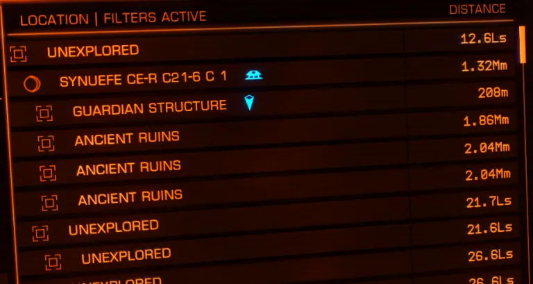
Guardian Structures have been found in the Synuefe, Col 173 and Vela Dark Region area – near the permit locked Regor sector. The can appear in systems without Ancient Ruins. They can appear at any distance from the entry point, but you will only see then in the Navigation Panel within 1000ls. It is worthwhile to visit known Ancient Ruins to see if there is a Guardian Structure nearby.
Canonn are recording the locations of the new structures. Look for entries in the ‘Sites’ tab of type ‘structure’. If you’re looking for particular Blueprints then check the ‘Scratch’ page. There is also a map of where they have been found – Guardian Structures currently shown as ‘structure’.
There are multiple site layouts, Guardian Structures appear more varied than the Ancient Ruins. They are also in more mountainous areas – it can be difficult to land nearby in larger ships. There are features that look like bridges and doors.
The ten different layouts tiny, small, and medium have been mapped by Zebarmy and Steve Arthur, and shown below.
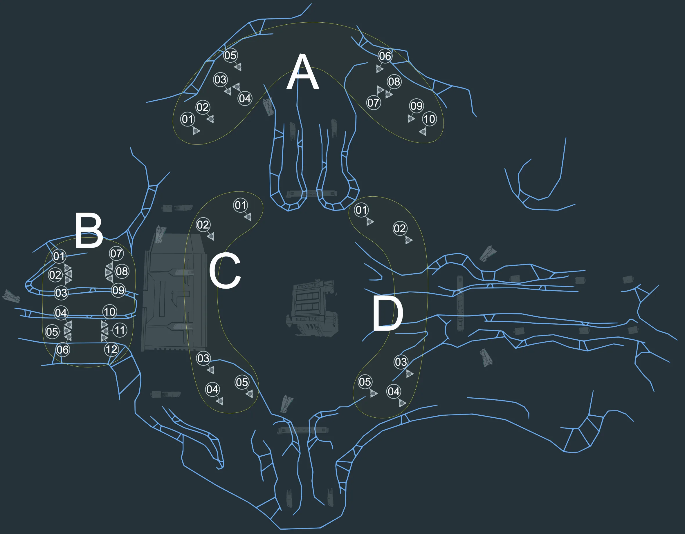
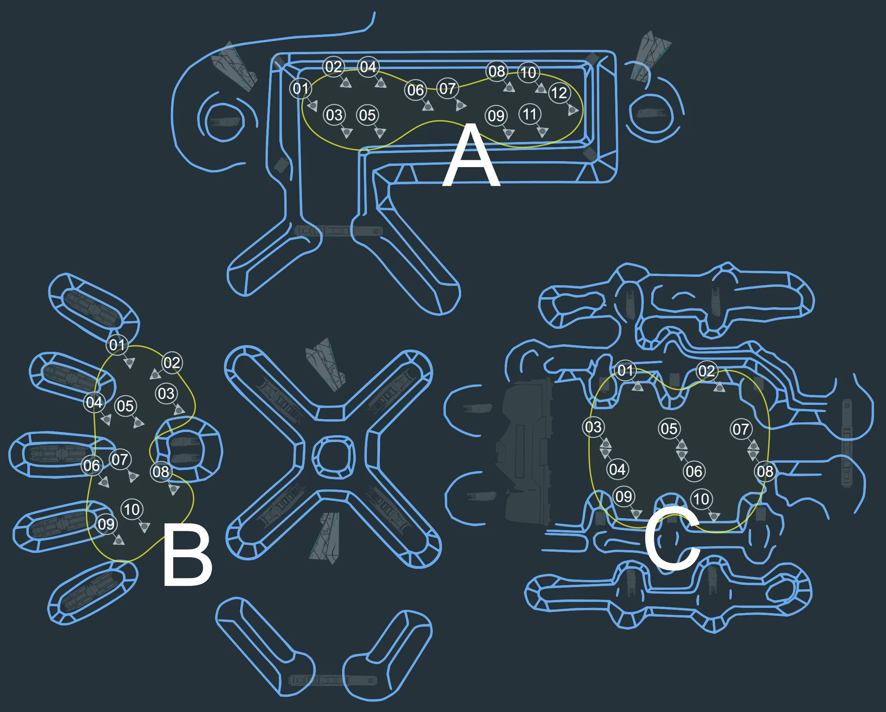
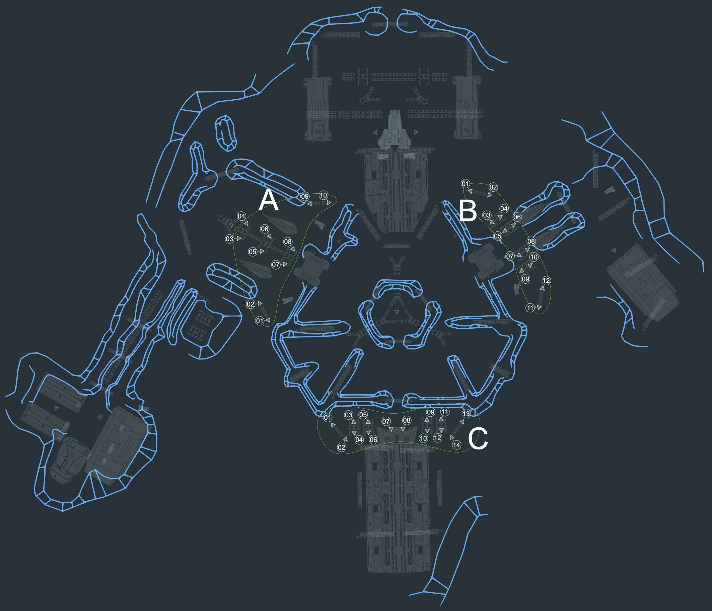
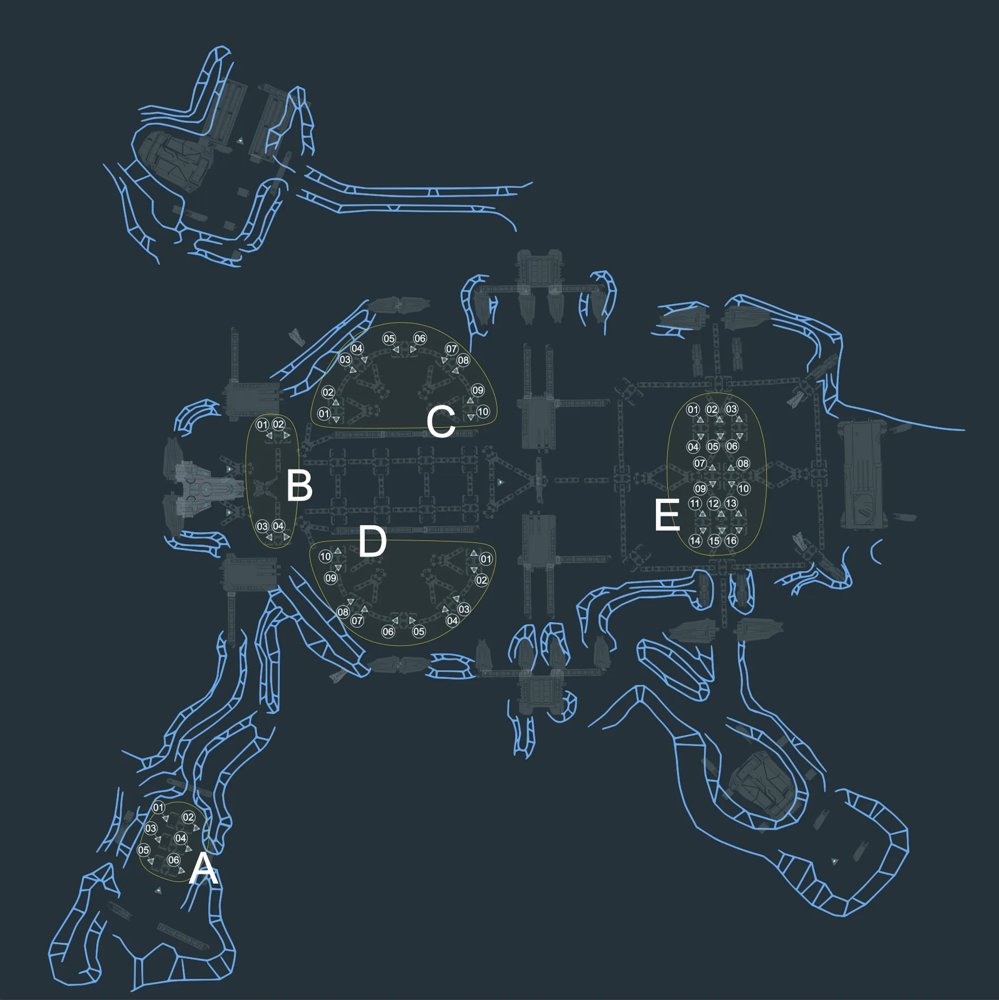
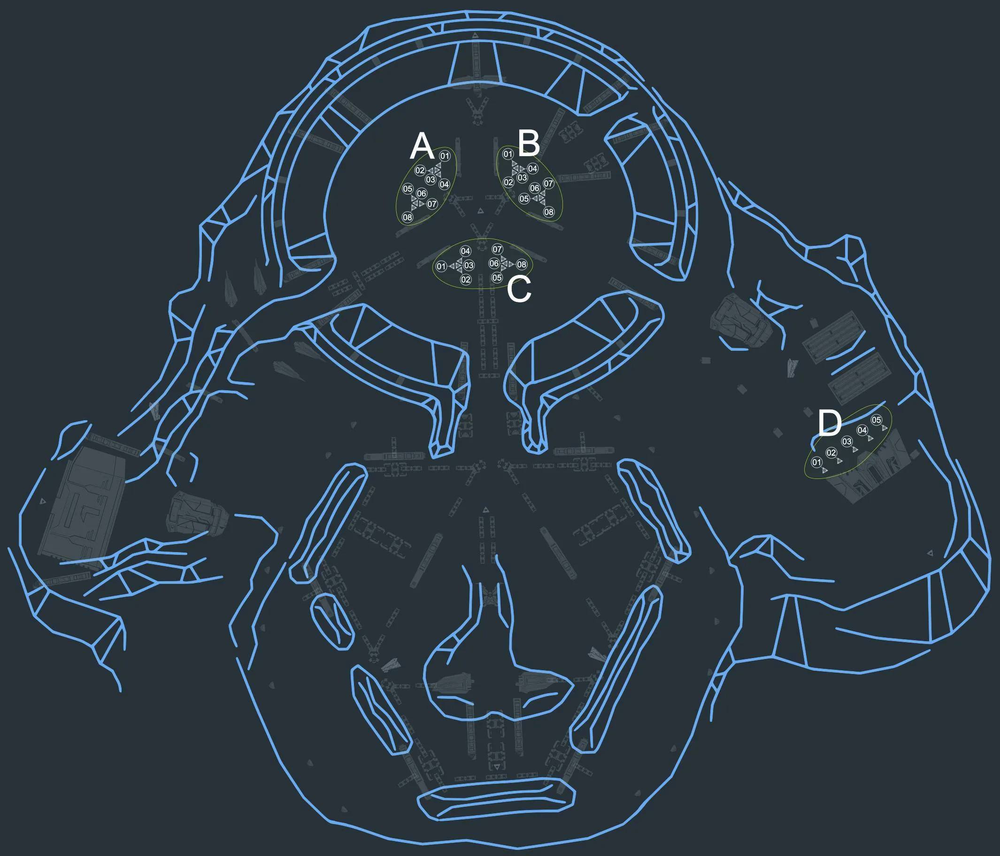
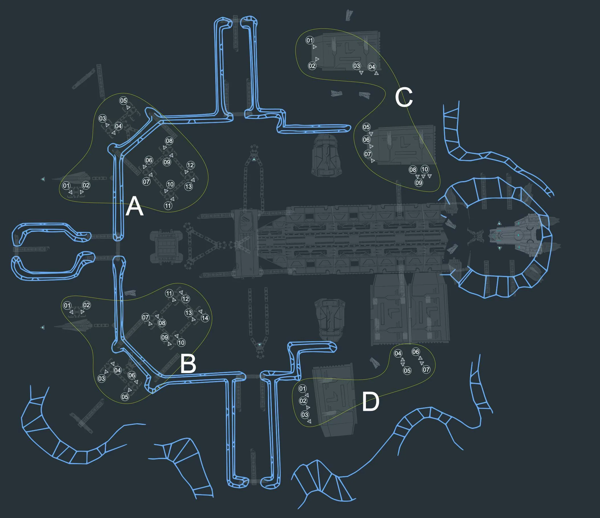
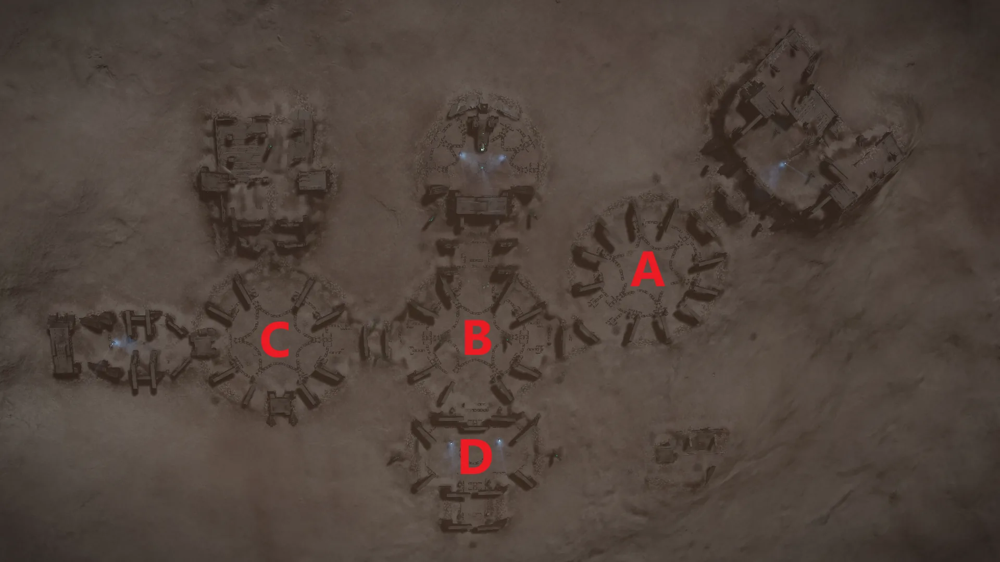
Robolobster Monolith Bank Images: Bank A, Bank B, Bank C, Bank D / Pylon Locations: Pylons
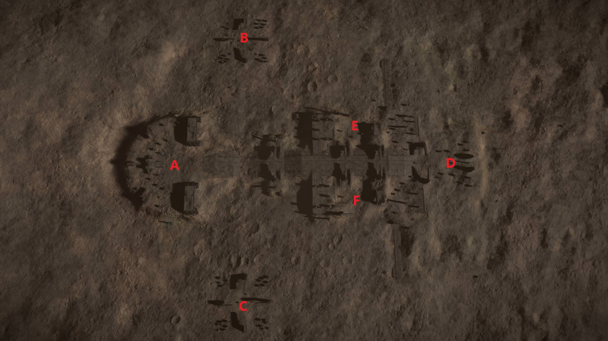
Squid Monolith Bank Images: Bank A, Bank B, Bank C, Bank D (Note: All Monoliths in Bank E and F are broken) / Pylon Locations: Pylons
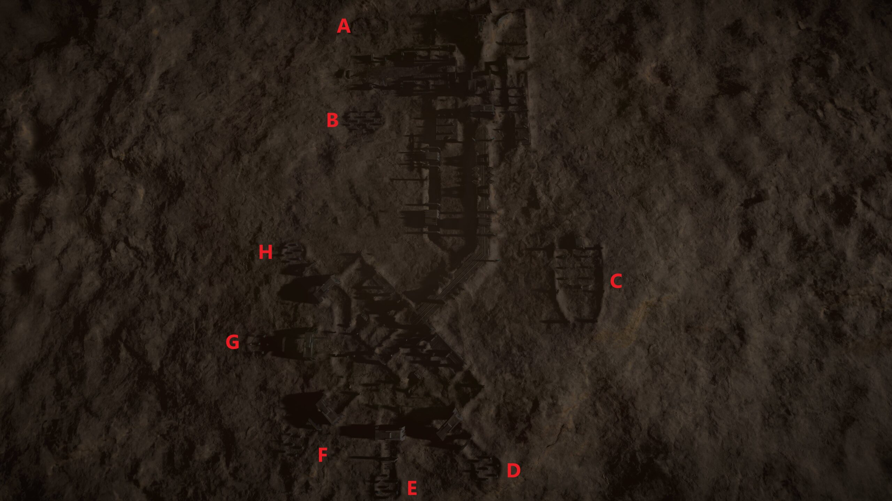
Stickyhand Monolith Bank Images: Bank A, Bank B, Bank C, Bank D-H / Pylon Locations: Pylons
These are part of the Ram Tah mission, and are described there.

Senitnel’s appear from locations in the site, denoted by small rock piles, often near active obelisks. Ram Tah has a good introduction.
It is easiest to destroy them using the turret view and sniping from a distance. Sentinels have missile attacks and kinetic attacks that will move your SRV. There are usually multiple per site (more can spawn as you interact with the site). It is usually advisable to destroy them before further investigation. When you destroy them you they will drop Guardian materials you can harvest. Point Defence on your ship is also useful, as it will attempt to defend you (even in your SRV) against missile attacks from Sentinels if you are within range.
All sites have these.
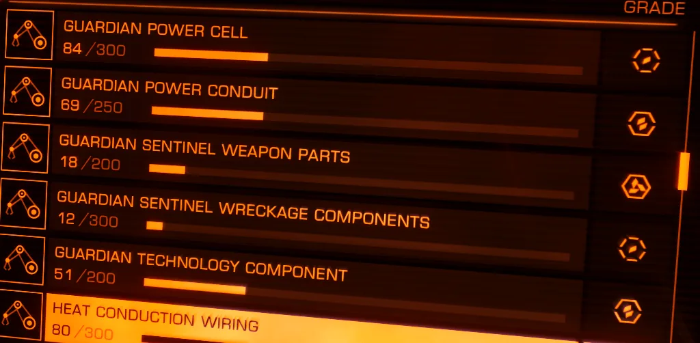
These are pillars, usually at an angle, that contain three targetable panels. There are also panels on other structures which glow blue and are targetable. Shoot them to get materials.
All sites have these.
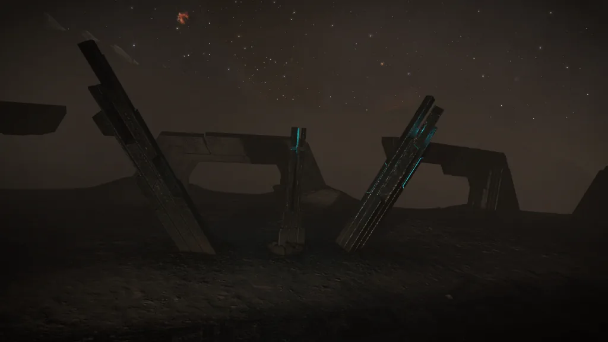
Pylons initially appear as triangles on the ground that are easy to miss. There are six at each site.
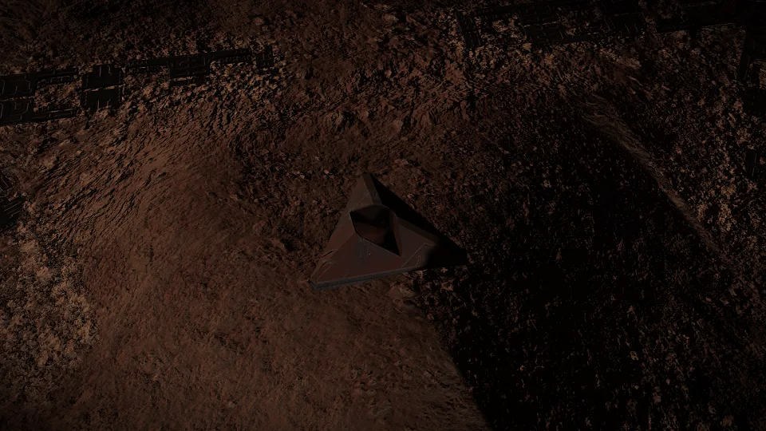
There are two near the Data Terminal – when you approach they will rise out of the ground. After this has been done then other pillars can be raised across the site. When the initial pillars rise extra Sentinels will spawn.
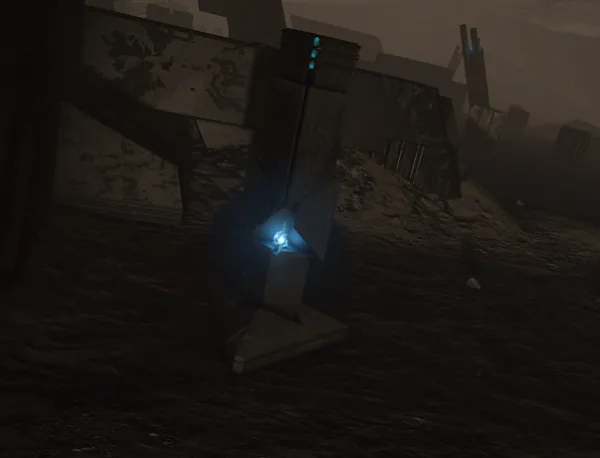
Note the blue light. You can shoot the pylons with your SRV to charge them. Once charged they send a beam of light into the sky. A timer will start. At this point more sentinels may appear. To activate the site you must charge all pylons within the time limit. The time increases as you charge more pylons. The best way to do this is to find and raise all the pylons and remove any sentinels. Then charge all the pylons. Once the pylons are charged you can interact with the Data Terminal.
Not all sites have pylons.
This is a structure usually situated in a raised platform near the centre of the site. This is activated by charging the pylons. Once the pylons are charged you can drop a specific item (see below) in front of the Data Terminal and it will activate. Datalink Scan the resulting sphere to get Blueprints that are used at Tech Brokers for unlocking various items for sale. There are several types of blueprint available (Module, Weapon and Vessel at the moment). The type of blueprint is determined by the site layout, so a ‘Bear’ will always give Weapon, ‘Turtle’ will always gives Module, etc.
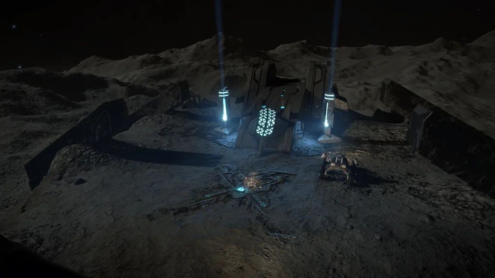
For Data Terminal activation Weapon and Module blueprints require an Ancient Relic (available on the site, shoot one off a relic tower), Vessel Blueprints require an Ancient Key, which is available from Guardian Beacons, so are best collected beforehand. Ancient Keys can be used at any suitable site, not just the location that the Beacon gives you.
Note: The “Tiny” sites do not have a Data Terminal.
| Layout | Size | Blueprint |
|---|---|---|
| Fistbump | Tiny | – |
| Lacrosse | Tiny | – |
| Crossroads | Tiny | – |
| Bear | Small | Weapon |
| Hammerbot | Small | Weapon |
| Bowl | Small | Weapon |
| Turtle | Small | Module |
| Stickyhand | Medium | Vessel |
| Squid | Medium | Vessel |
| Robolobster | Medium | Vessel |
| System | Ly’s to Sol | Body | Layout |
|---|---|---|---|
| Synuefe GV-T b50-4 | 676.17 | B 1 | Bear |
| Synuefe PM-L c24-24 | 724.40 | C 6 | Bear |
| NGC 2451A Sector EB-X c1-18 | 787.91 | C 2 | Hammerbot |
| Synuefe EU-Q c21-10 | 790.32 | A 3 | Bear |
| NGC 2451A Sector UJ-Q b5-7 | 796.35 | B 2 | Hammerbot |
| Synuefe HF-P c22-17 | 797.53 | B 1 | Bear |
| NGC 2451A Sector IR-W d1-77 | 802.78 | AB 1 a | Hammerbot |
| Pencil Sector YJ-A c33 | 802.96 | 1 | Bear |
| Synuefe EN-H d11-106 | 806.27 | 6 a | Bear |
| Pencil Sector CQ-Y c31 | 806.66 | C 1 | Bowl |
| Pencil Sector BQ-X b1-4 | 807.96 | B 2 | Bear |
| NGC 2451A Sector WE-Q b5-6 | 818.43 | B 1 | Bear |
| Wregoe JR-A b41-3 | 818.46 | F 2 | Bowl |
| Synuefe FK-P c22-2 | 823.19 | E 1 | Hammerbot |
| HIP 41730 | 832.03 | 13 g a | Bowl |
| Synuefe CE-R c21-6 | 838.48 | C 1 | Hammerbot |
| NGC 2451A Sector MC-V c2-5 | 844.33 | E 1 | Bowl |
| Pencil Sector XO-A c31 | 851.78 | B 3 | Hammerbot |
| Synuefe SP-F b44-0 | 861.18 | C 1 | Bear |
| Synuefe BH-J d10-68 | 862.78 | C 1 | Bowl |
| Synuefe ZL-J d10-109 | 863.26 | E 3 | Hammerbot |
| Wregoe JR-L c21-1 | 866.47 | C 2 | Bowl |
| Synuefe VK-F b44-0 | 874.23 | B 1 | Hammerbot |
| Col 173 Sector FK-C c14-6 | 878.55 | D 2 | Bowl |
| Col 173 Sector PF-E b28-3 | 889.08 | B 1 | Bowl |
| Col 173 Sector ME-P d6-92 | 910.75 | B 5 | Bowl |
| Vela Dark Region JS-T b3-0 | 914.81 | A 3 | Bowl |
| Col 173 Sector ZS-F c12-27 | 917.10 | B 3 | Hammerbot |
| Col 173 Sector ZL-L b24-2 | 924.97 | B 1 | Bowl |
| Col 173 Sector XH-H c11-21 | 931.94 | B 1 | Bear |
| Vela Dark Region DL-Y d91 | 936.89 | 5 a | Bear |
| Col 173 Sector LT-Q d5-90 | 941.70 | D 1 | Bowl |
| Col 173 Sector ZV-M b23-1 | 951.37 | A 1 | Bowl |
| Col 173 Sector LT-Q d5-82 | 955.76 | A 3 | Bowl |
| Vela Dark Region CQ-Y c0 | 957.99 | A 2 | Bowl |
| Col 173 Sector PZ-O d6-110 | 962.62 | 5 a | Bowl |
| Col 173 Sector AD-H c11-15 | 968.48 | B 2 | Bear |
| Col 173 Sector FZ-D c13-30 | 969.28 | 2 | Hammerbot |
| Vela Dark Region EG-X b1-1 | 976.19 | A 1 | Bear |
| Col 173 Sector NV-B c14-1 | 982.19 | 1 | Hammerbot |
| Vela Dark Region ZE-A d66 | 988.54 | 6 b | Hammerbot |
| Col 173 Sector CC-K b25-8 | 988.59 | A 5 | Hammerbot |
| Col 173 Sector RU-O d6-16 | 988.85 | A 2 a | Hammerbot |
| Vela Dark Region EL-Y d55 | 991.17 | 1 | Bear |
| Col 173 Sector KY-Q d5-26 | 1005.60 | 6 a | Bowl |
| Col 173 Sector HN-I b26-5 | 1034.59 | A 1 | Bowl |
| Col 173 Sector OD-J b25-2 | 1040.30 | B 1 | Bear |
| Col 173 Sector HR-M b23-3 | 1059.94 | B 7 | Hammerbot |
| Vela Dark Region TD-S b4-5 | 1079.20 | C 1 | Bear |
| Wregoe BU-Y b2-0 | 1519.20 | 1 c | Bear |
| System | Ly’s to Sol | Body | Layout |
|---|---|---|---|
| Synuefe PX-J c25-8 | 662.26 | 7 a | Turtle |
| Synuefe LQ-T b50-1 | 745.19 | B 2 | Turtle |
| Synuefe GT-H b43-1 | 777.17 | C 4 | Turtle |
| NGC 2451A Sector DL-Y d61 | 797.80 | A 2 | Turtle |
| Pencil Sector YJ-A c12 | 812.43 | B 3 | Turtle |
| Pencil Sector VY-A b8 | 816.61 | B 1 | Turtle |
| Wregoe IM-Z b41-2 | 838.82 | B 2 | Turtle |
| Pencil Sector ZJ-A c4 | 862.26 | B 4 | Turtle |
| Synuefe NL-N c23-4 | 871.24 | B 3 | Turtle |
| Col 173 Sector XG-K b25-3 | 913.90 | B 2 | Turtle |
| Col 173 Sector DS-J b25-2 | 918.02 | B 5 | Turtle |
| Vela Dark Region DL-Y d112 | 945.41 | 1 a | Turtle |
| Vela Dark Region DL-Y d83 | 947.34 | 5 b | Turtle |
| Col 173 Sector SZ-G b26-0 | 964.16 | B 2 | Turtle |
| Col 173 Sector GS-J b25-4 | 980.74 | D 2 | Turtle |
| Col 173 Sector SU-O d6-54 | 1007.92 | B 2 | Turtle |
| HD 63154 | 1009.80 | B 3 a | Turtle |
| System | Ly’s to Sol | Body | Layout |
|---|---|---|---|
| IC 2391 Sector CA-A d43 | 603.19 | 12 a | Stickyhand |
| IC 2391 Sector HG-X b1-8 | 615.94 | C 2 | Robolobster |
| IC 2391 Sector FL-X b1-7 | 618.51 | A 3 | Squid |
| Synuefe NB-B b47-10 | 656.32 | B 2 | Robolobster |
| Synuefe DK-D b46-4 | 661.01 | C 1 | Squid |
| Synuefe GQ-N c23-21 | 661.81 | B 3 | Stickyhand |
| Synuefe IL-N c23-19 | 680.75 | B 2 | Squid |
| Synuefe DJ-G b44-3 | 698.57 | A 5 | Robolobster |
| Synuefe HP-E b45-8 | 704.46 | D 3 | Stickyhand |
| HIP 36781 | 710.59 | A 6 b | Squid |
| Synuefe JP-E b45-4 | 740.10 | C 1 | Stickyhand |
| Synuefe HE-G b44-5 | 746.60 | B 2 | Squid |
| Synuefe BZ-Q c21-11 | 748.10 | B 5 | Robolobster |
| Synuefe ZG-J d10-79 | 749.98 | B 1 | Squid |
| Synuefe IE-G b44-2 | 756.91 | A 4 | Robolobster |
| Synuefe EN-H d11-29 | 760.01 | 6 b | Robolobster |
| Synuefe AH-J d10-46 | 771.99 | C 1 | Robolobster |
| Synuefe KZ-F b44-5 | 772.88 | A 1 | Stickyhand |
| NGC 2451A Sector VJ-R c4-22 | 779.39 | A 1 | Stickyhand |
| Synuefe PF-E b45-5 | 782.75 | B 2 | Stickyhand |
| Synuefe EN-H d11-96 | 783.98 | 7 a | Stickyhand |
| Synuefe EU-Q c21-15 | 785.72 | A 1 | Squid |
| Synuefe EN-H d11-28 | 785.74 | 8 b | Robolobster |
| NGC 2451A Sector TO-R c4-10 | 786.14 | B 1 | Robolobster |
| Synuefe AH-J d10-20 | 787.18 | A 3 | Stickyhand |
| Synuefe NU-F b44-5 | 793.13 | B 1 | Stickyhand |
| Synuefe BE-R c21-35 | 800.05 | E 2 | Robolobster |
| Synuefe AH-J d10-103 | 802.12 | B 1 | Squid |
| Synuefe ED-I b43-8 | 810.72 | A 2 | Squid |
| Synuefe DZ-Q c21-14 | 814.63 | 10 a | Squid |
| Trapezium Sector YU-X c1-2 | 1344.50 | 1 a | Squid |
| Wregoe BU-Y b2-0 | 1519.20 | 1 c | Stickyhand |